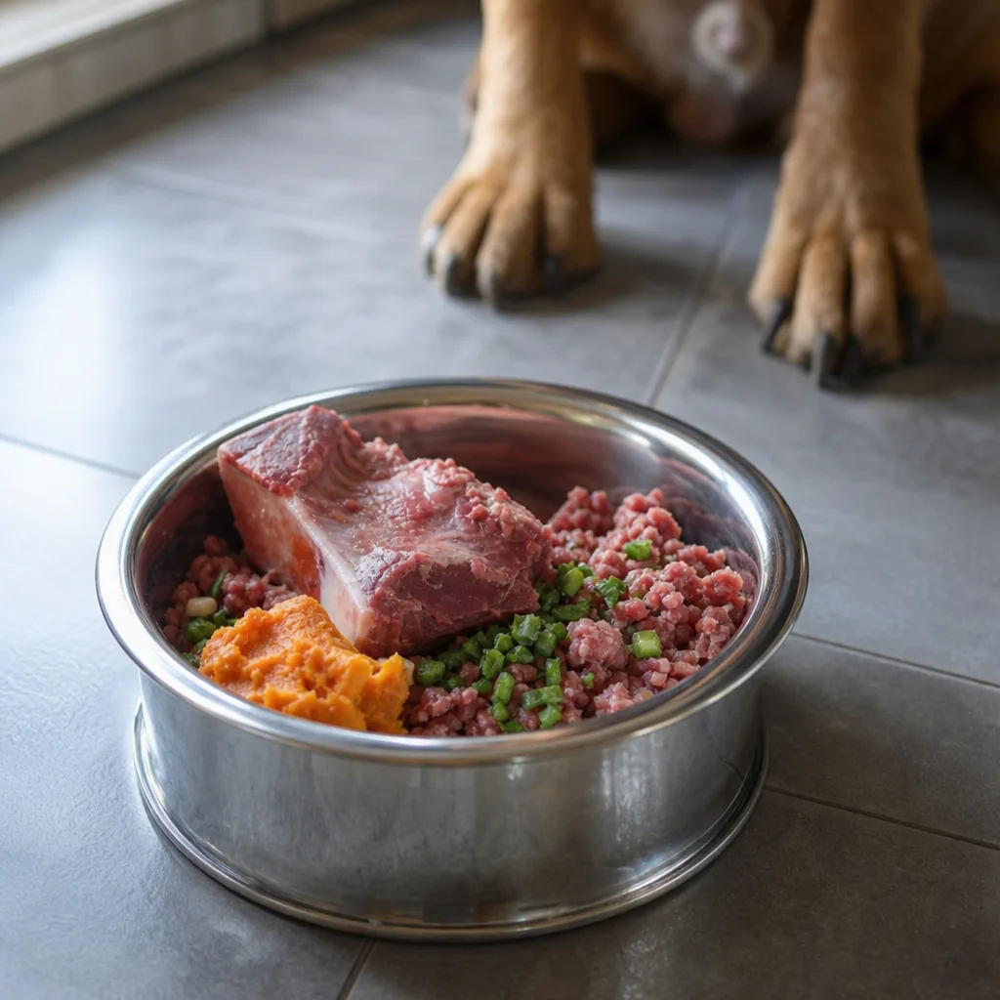

Raw and fresh
Frozen raw, freeze-dried and gently cooked, across more brands and proteins than anywhere else nearby. Fromm lists us as carrying the largest raw-diet selection in the area. Cold chain kept properly from the case to your car.